Kubernetes에 JupyterLab과 Open WebUI를 배포했다고 하자. 맥에서는 브라우저로 두 앱에 접속하고, 클러스터 안의 다른 프로그램에서도 필요할 때 이 앱들을 호출하려 한다.
접속 방법은 크게 두 가지다.
- 외부 접속: 도메인과 HTTPS를 사용해 HAProxy와 Envoy를 거친다.
- 내부 접속: 호출할 앱의 Service 이름으로 직접 연결한다. Envoy에 설정된 공통 처리가 필요하면 내부에서도 Envoy를 거칠 수 있다.
외부 접속에서는 다음과 같이 포트가 달라진다.
맥 → HAProxy:443 → 워커:30443 → Envoy Pod:10443
그런데 Gateway 설정에는 port: 443이 적혀 있다. 이 관계를 이해하려면 설정을 준비하는 과정과 실제 요청이 전달되는 과정을 구분해야 한다.
1. 접속 경로에 등장하는 구성 요소
먼저 실제 요청을 처리하는 프로그램과, 그 프로그램의 동작을 정하는 Kubernetes 설정을 구분하자.
| 구성 요소 | 역할 |
|---|---|
| 노드 | Pod를 실행하는 서버 또는 VM |
| Pod | Jupyter나 Envoy 같은 프로그램이 실행되는 Kubernetes 단위 |
| Service | 대상 Pod의 주소가 바뀌어도 안정적인 이름·주소·포트로 연결하도록 하는 설정 |
| HAProxy | 클러스터 앞에서 연결을 받아 워커 노드로 중계하는 프로그램 |
| Envoy | HTTPS를 처리하고 요청 조건에 따라 앱으로 전달하는 프록시 프로그램 |
| Gateway | 제공할 접속 입구의 포트·프로토콜·도메인·인증서를 선언하는 설정 |
| HTTPRoute | 받은 HTTP 요청을 어떤 대상으로 전달할지 정하는 설정 |
| Envoy Gateway 컨트롤러 | Gateway와 HTTPRoute 등을 읽고 실제 Envoy와 관련 Kubernetes 자원을 구성하는 프로그램 |
Service 자체가 별도 중계 서버로 실행되는 것은 아니다. Service 설정을 바탕으로 준비된 네트워크 규칙이 요청을 대상 Pod로 전달한다.
Gateway와 HTTPRoute도 요청이 통과하는 별도 서버가 아니다. 컨트롤러가 이 선언을 실제 설정으로 바꾸고, Envoy가 그 설정에 따라 요청을 처리한다.
2. 예시 환경: 외부에서는 공용 Envoy를 거친다
예시 환경에는 두 웹앱이 있다.
| 웹앱 | 외부 접속 주소 | 앱의 내부 Service |
|---|---|---|
| JupyterLab | https://jupyter.k8s.test |
lora-lab/jupyterlab:8888 |
| Open WebUI | https://chat.k8s.test |
llm-d/open-webui:8080 |
내부 Service 표기의 lora-lab/jupyterlab은 lora-lab 네임스페이스에 있는 jupyterlab Service라는 뜻이다.
두 도메인은 같은 공용 IP인 10.0.0.30으로 연결된다. 두 앱은 HAProxy와 Envoy를 공유하고, Envoy에서 도메인에 따라 목적지가 나뉜다.

이 환경에서 맥은 VPN을 통해 클러스터 네트워크에 접근한다. 도메인 해석과 네트워크 경로는 각각 다른 설정으로 결정된다.
이름 해석
jupyter.k8s.test → 10.0.0.30
라우팅
10.0.0.30으로 가는 패킷 → VPN 경로
맥의 /etc/hosts에는 다음과 같이 이름과 IP를 연결할 수 있다.
10.0.0.30 jupyter.k8s.test chat.k8s.test
이름이 IP로 해석되는 것과 그 IP까지 실제로 통신할 수 있는 것은 별개의 조건이다. 이름이 올바르더라도 VPN이나 라우팅에 문제가 있으면 접속할 수 없다.
3. Gateway의 443이 NodePort 30443과 Envoy 10443으로 연결되는 과정
이 환경에서는 다음 세 포트가 함께 등장한다.
| 포트 | 사용하는 위치 |
|---|---|
443 |
HAProxy가 외부 연결을 받는 포트 |
30443 |
워커 노드가 Envoy Service의 연결을 받는 NodePort |
10443 |
Envoy 프로그램이 Pod 안에서 HTTPS 연결을 받는 실제 포트 |
여기에 Envoy Service의 port: 443과 Gateway 리스너의 port: 443도 등장한다. 숫자가 같거나 다르다는 이유만으로 연결되는 것은 아니다. 컨트롤러와 Service 설정이 이 접속점들을 연결한다.
요청이 오기 전에 컨트롤러가 연결 관계를 준비한다
Gateway에는 다음과 같이 HTTPS 입구를 선언한다.
listeners:
- name: jupyter-https
hostname: jupyter.k8s.test
port: 443
protocol: HTTPS
tls:
mode: Terminate
certificateRefs:
- name: jupyter-tls
이 선언의 의미는 다음과 같다.
jupyter.k8s.test에 HTTPS 443 접속을 제공하고,jupyter-tls인증서를 사용한다.
Envoy Gateway 컨트롤러는 이 선언과 관련 설정을 읽고 실제 자원을 구성한다. 우리 환경에서는 다음과 같이 준비된다.

생성된 Service의 해당 부분은 다음과 같다.
spec:
type: NodePort
externalTrafficPolicy: Cluster
ports:
- port: 443
nodePort: 30443
targetPort: 10443
각 필드는 서로 다른 접속점을 뜻한다.
| 필드 | 의미 |
|---|---|
port: 443 |
Service의 ClusterIP로 접속할 때 사용하는 포트 |
nodePort: 30443 |
노드 IP로 접속할 때 사용하는 포트 |
targetPort: 10443 |
최종적으로 연결할 Envoy Pod의 포트 |
따라서 이 Service에는 같은 Envoy 수신 포트로 연결되는 두 입구가 있다.
노드 IP:30443 ──────────────┐
├──→ Envoy Pod IP:10443
Service의 ClusterIP:443 ────┘
여기서 10443은 이 환경의 Envoy Gateway가 구성한 실제 수신 포트다. Gateway API를 사용하는 모든 구현체가 반드시 이 숫자를 사용하는 것은 아니다.
HAProxy는 워커의 30443으로 연결한다
HAProxy의 HTTPS 관련 설정은 다음과 같다.
defaults
mode tcp
frontend webui_https
bind 0.0.0.0:443
default_backend envoy_https_nodeports
backend envoy_https_nodeports
balance roundrobin
option tcp-check
server worker-01 10.0.0.21:30443 check inter 3s fall 3 rise 2
server worker-02 10.0.0.22:30443 check inter 3s fall 3 rise 2
이 설정은 다음 동작을 지정한다.
- HAProxy가 실행되는 LB의 443번에서 연결을 받는다.
- 정상인 백엔드 중 하나를 선택한다.
- 선택한 워커의 30443번으로 새 연결을 만들고 데이터를 중계한다.
mode tcp이므로 HAProxy는 여기서 HTTPS를 복호화하지 않는다. webui_https라는 이름은 설정 블록의 식별자이며, Jupyter 연결도 같은 경로를 사용한다.
실제 요청은 미리 준비된 포트 연결을 따라간다
맥이 https://jupyter.k8s.test에 접속하면 다음 과정이 일어난다.
① 맥이 접속
목적지: 10.0.0.30:443
↓
② HAProxy가 워커로 연결
목적지: 10.0.0.21:30443
↓
③ 워커에 준비된 Service 전달 규칙 적용
목적지: Envoy Pod IP:10443
↓
④ Envoy가 10443에서 HTTPS 연결 수신
워커에 들어온 30443을 Gateway YAML의 443과 직접 비교하는 단계는 없다.
Gateway에 적힌 443은 컨트롤러가 실제 Service와 Envoy를 구성할 때 사용한 선언이다. 요청이 들어올 때는 이미 다음 관계가 준비돼 있다.
Gateway의 HTTPS 443 선언
↓ 컨트롤러가 실제 설정으로 구현
NodePort 30443 → Envoy의 HTTPS 수신 포트 10443
따라서 NodePort 요청이 Service의 ClusterIP 443을 중간에 한 번 더 거칠 필요도 없다.
NodePort로 접근
워커 IP:30443 → Envoy Pod IP:10443
ClusterIP로 접근
Service IP:443 → Envoy Pod IP:10443
두 경로는 같은 Envoy 입구로 연결되는 서로 다른 접근 방법이다. 포트가 달라져도 HAProxy가 TLS 데이터를 그대로 중계하므로 Envoy가 HTTPS로 처리할 수 있다.
4. Envoy Pod가 없는 워커에서도 접속을 받을 수 있다
이 환경에서 Envoy Pod는 gpu-worker-01에 있지만, HAProxy는 worker-01과 worker-02로 연결한다.
이것이 가능한 이유는 NodePort Service가 각 노드에 해당 Service로 전달할 네트워크 규칙을 준비하고, 외부 트래픽 정책이 Cluster이기 때문이다.
worker-01:30443 ──────┐
worker-02:30443 ──────┼──→ gpu-worker-01에 있는 Envoy Pod
gpu-worker-01:30443 ──┘
노드마다 Service나 Envoy Pod가 하나씩 추가되는 것은 아니다.
Service의 외부 트래픽 정책은 다음과 같다.
spec:
type: NodePort
externalTrafficPolicy: Cluster
| 값 | 요청을 받은 노드가 선택할 수 있는 대상 |
|---|---|
Cluster |
다른 노드를 포함한 준비된 대상 Pod |
Local |
자기 노드에 있는 대상 Pod |
Cluster는 기본값이다. 따라서 Envoy가 없는 worker-01이 요청을 받아도 GPU 워커의 Envoy Pod로 전달할 수 있다. Kubernetes 외부 트래픽 정책
이 환경에서는 다음 두 구성 요소가 이 전달을 담당한다.
- kube-proxy의 IPVS 설정: NodePort 요청을 실제 대상 Pod의 IP와 포트로 전달하도록 커널 규칙을 준비한다.
- Cilium의 VXLAN 네트워크: 다른 노드에 있는 Pod까지 패킷을 운반한다.
worker-01:30443으로 요청 도착
↓ Service 전달 규칙 적용
목적지가 Envoy Pod IP:10443으로 변경
↓ Cilium의 노드 간 터널로 운반
gpu-worker-01에 도착
↓
Envoy Pod로 전달
VXLAN은 Pod로 보낼 패킷을 노드 간에 운반할 수 있도록 바깥쪽 포장에 넣는 방식이다. Cilium 터널 통신 설명
5. Envoy에 도착한 요청은 리스너와 HTTPRoute 설정에 따라 처리된다
앞의 포트 연결은 요청을 Envoy까지 도착시키는 과정이다. 이제 Envoy는 어떤 인증서를 사용하고, 받은 요청을 어떤 앱으로 전달할지 결정해야 한다.
Gateway 리스너는 HTTPS 접속 조건을 정한다
Jupyter용 리스너에는 다음 조건이 있다.
listeners:
- name: jupyter-https
hostname: jupyter.k8s.test
port: 443
protocol: HTTPS
tls:
mode: Terminate
certificateRefs:
- name: jupyter-tls
컨트롤러는 이 조건을 Envoy의 실제 HTTPS 수신 설정에 반영한다.
| 설정 | 역할 |
|---|---|
name |
다른 자원에서 이 리스너를 참조할 이름 |
hostname |
이 리스너가 처리할 도메인 범위 |
port, protocol |
Gateway가 제공할 접속 포트와 프로토콜 |
tls.mode: Terminate |
Envoy에서 TLS 연결을 처리하고 암호화를 해제 |
certificateRefs |
TLS 연결에 사용할 인증서 Secret |
port: 443이 있다고 해서 Envoy가 들어온 패킷의 목적지 포트에서 원래의 443을 찾아내는 것은 아니다. 컨트롤러가 이 리스너를 구현한 실제 수신 지점이 우리 환경에서는 Pod의 10443인 것이다.
HTTPRoute는 받은 요청을 어디로 보낼지 정한다
아래는 Jupyter로 연결하는 관계를 보여주는 HTTPRoute 발췌다.
spec:
parentRefs:
- name: llm-gateway
sectionName: jupyter-https
hostnames:
- jupyter.k8s.test
rules:
- backendRefs:
- name: jupyterlab
namespace: lora-lab
port: 8888
각 참조의 의미는 다음과 같다.
parentRefs.name
→ 사용할 Gateway
parentRefs.sectionName
→ 그 Gateway 안의 리스너
hostnames
→ 이 Route가 처리할 HTTP 요청의 호스트 이름
backendRefs
→ 전달할 Service의 이름·네임스페이스·포트
backendRefs.name: jupyterlab은 Service 이름이다. Service의 Pod 선택용 selector를 적는 자리가 아니다.
다른 네임스페이스의 Service를 참조하는 경우에는 그 참조를 허용하는 ReferenceGrant도 필요하다. 예시 환경에는 Jupyter Service를 참조할 수 있도록 해당 설정이 준비돼 있다.
Gateway 리스너와 HTTPRoute에 호스트 이름이 각각 있는 이유도 역할이 다르기 때문이다.
- 리스너의
hostname은 그 입구가 받아들일 도메인 범위를 정한다. - HTTPRoute의
hostnames는 그 입구에서 받은 HTTP 요청에 어떤 전달 규칙을 적용할지 정한다.
특정 도메인으로 제한한 리스너에만 붙는 Route라면 hostnames를 생략해도 리스너의 범위 안에서 규칙을 적용할 수 있다. 공용 리스너에 여러 Route를 연결한다면 각 Route의 호스트 이름으로 목적지를 구분할 수 있다. HTTPRoute 호스트 매칭 규칙
6. 같은 IP와 443 포트에서 여러 도메인을 처리할 수 있다
WebUI와 Jupyter의 HTTPS 리스너는 모두 443을 사용한다.
공용 Envoy Service
ClusterIP:443 또는 노드 IP:30443
↓
같은 Envoy Pod:10443
├─ chat.k8s.test에 맞는 설정
└─ jupyter.k8s.test에 맞는 설정
리스너마다 별도 Service나 수신 포트를 하나씩 만드는 것은 아니다. 같은 접속점에서 도메인 조건에 따라 서로 다른 TLS 설정과 전달 규칙을 적용한다.
TLS에서는 SNI로 인증서를 선택한다
HTTPS 연결에서는 HTTP 요청을 읽기 전에 인증서를 선택해야 한다. 이때 클라이언트가 TLS 연결 시작 단계에서 보내는 도메인 정보인 SNI를 사용할 수 있다.
TLS 연결 시작
SNI: jupyter.k8s.test
↓
Jupyter용 인증서 선택·제시
↓
클라이언트가 인증서 검증
↓
HTTPS 연결 성립
↓
HTTP 요청을 읽어 HTTPRoute 선택
두 단계에서 사용하는 정보는 다음과 같다.
| 정보 | 사용하는 단계 |
|---|---|
| TLS의 SNI | 연결을 맺을 때 인증서와 TLS 설정 선택 |
| HTTP 요청의 호스트 이름 | 연결 후 요청의 전달 규칙 선택 |
즉, 30443 → 10443 포트 연결이 Envoy까지 도달하게 해주고, 도착한 연결의 SNI와 HTTP 호스트 이름이 도메인별 처리를 가능하게 한다.
hostname 없는 HTTPS 리스너도 가능하다
리스너의 hostname을 생략해도 인증서를 지정할 수 있다.
listeners:
- name: https
protocol: HTTPS
port: 443
tls:
mode: Terminate
certificateRefs:
- name: webui-tls
- name: jupyter-tls
Envoy Gateway는 같은 리스너의 여러 인증서 중 SNI에 맞는 인증서를 선택하는 구성을 지원한다. 또는 인증서 한 장에 두 도메인을 모두 포함할 수도 있다. Envoy Gateway의 인증서 선택 예제
hostname을 생략하면 리스너에서 도메인 범위를 제한하지 않는다. 클라이언트는 여전히 자신이 접속한 도메인과 인증서의 이름이 맞는지 검증한다.
두 가지 구성은 다음처럼 비교할 수 있다.
| 항목 | 도메인별 리스너 두 개 | 공용 HTTPS 리스너 하나 |
|---|---|---|
| 도메인 범위 | 리스너마다 명시 | 리스너에서는 제한하지 않음 |
| 인증서 | 각 리스너에 연결 | 한 리스너에 여러 인증서 또는 다중 도메인 인증서 |
| HTTPRoute | 각각의 리스너에 연결 | 같은 리스너에 연결 |
| Envoy·Service | 공용 한 벌 | 공용 한 벌 |
공용 리스너로 바꾸면 두 Route의 parentRefs.sectionName도 공통 리스너 이름인 https로 바꿔야 한다. 각 Route의 hostnames는 유지해 목적지를 구분한다.
7. 클러스터 내부에서는 각 앱의 Service로 직접 접속할 수 있다
외부 브라우저는 HAProxy와 Envoy를 통해 앱에 들어왔지만, 클러스터 안의 프로그램은 앱 Service로 직접 접속할 수 있다.
일반적인 ClusterIP Service의 전체 DNS 이름은 다음 구조다. 이런 전체 이름을 FQDN이라고 한다.
서비스명.네임스페이스.svc.cluster.local
여기서 cluster.local은 예시 환경의 클러스터 DNS 도메인이다.
Jupyter에 직접 접속하는 주소는 다음과 같다.
http://jupyterlab.lora-lab.svc.cluster.local:8888
Open WebUI에는 별도의 Service 이름을 사용한다.
http://open-webui.llm-d.svc.cluster.local:8080
DNS가 각각 해당 Service의 ClusterIP를 알려주므로, 공용 Envoy에서 도메인별로 나누지 않아도 호출할 앱이 정해진다. Kubernetes Service DNS 설명

이 경로에서는 HAProxy, 공용 Envoy, 그 Envoy의 Gateway와 HTTPRoute를 거치지 않는다.
앱 자체의 인증은 직접 접속에서도 그 앱의 동작에 따라 적용된다. 예를 들어 Jupyter가 토큰 인증을 요구한다면 내부 Service로 직접 접속해도 해당 인증이 필요하다.
8. 내부에서도 Envoy를 사용하는 이유
Service 직접 호출은 특정 앱에 전달하는 간단한 경로다. Envoy 경유는 그 경로에 설정된 공통 처리가 필요한 경우에 사용한다.
| 필요한 동작 | 사용할 수 있는 경로 |
|---|---|
| 특정 앱에 바로 요청 전달 | 앱 Service FQDN 직접 호출 |
| Envoy에 설정된 공통 인증·요청 제한 적용 | Envoy 경유 |
| 도메인·경로·헤더에 따른 목적지 선택 | Envoy 경유 |
| 전달 전 요청 경로나 헤더 수정 | 해당 처리가 설정된 Envoy 경유 |
| 외부와 같은 라우팅 경로 검증 | Envoy 경유 |
이 기능들은 별도 설정이 있어야 동작한다. Envoy를 통과하기만 하면 자동 적용되는 것은 아니다.
예시 환경의 모델 API는 요청 조건을 보고 모델 풀로 전달한다. 확인한 Route에는 다음 조건이 있었다.
x-ai-eg-model: qwen3.5-9b-q4
↓
qwen35-9b-inference-pool로 전달
모델 풀은 모델 실행 Pod들을 전달 대상으로 묶은 구성이다.
특정 모델 서버의 Service를 직접 호출하면 그 서버에 연결할 수 있지만, Envoy에 설정된 모델 선택과 요청 변경 경로는 거치지 않는다.

따라서 내부 통신의 경로는 “내부니까 직접 호출한다”만으로 결정하지 않는다. 호출하려는 기능이 앱 자체에 있는지, Envoy 경로에 설정돼 있는지를 보고 선택한다.
9. 내부에서 Envoy를 호출할 때도 요청 이름을 맞춰야 한다
공용 Envoy의 Service FQDN으로 접속하면 Envoy에는 도착할 수 있다. 하지만 Envoy에 도착하는 것과 원하는 Route가 선택되는 것은 별개의 조건이다.
예를 들어 클라이언트가 Envoy Service의 FQDN을 HTTPS URL에 그대로 사용하면, 기본적으로 다음 이름을 사용한다.
실제 연결 대상: Envoy Service
TLS SNI: Envoy Service의 FQDN
HTTP 호스트: Envoy Service의 FQDN
이 이름은 jupyter.k8s.test와 다르다. Jupyter용 인증서와 Route만 준비했다면 이름이 맞지 않을 수 있다.
내부에서 Envoy를 호출할 때는 다음 방법을 사용할 수 있다.
Service FQDN을 처리할 Route를 구성한다
Envoy Service의 DNS 이름 자체를 Route의 hostnames에 등록할 수 있다.
실제로 예시 환경의 모델 API Route에는 외부 도메인과 Envoy Service의 FQDN이 함께 등록돼 있었다. 따라서 내부 HTTP 요청도 그 이름으로 처리할 수 있도록 구성돼 있다.
HTTPS를 사용하려면 접속 이름에 맞는 인증서 검증도 충족해야 한다.
앱 도메인을 내부 Envoy 주소로 해석한다
클러스터 내부 DNS를 다음처럼 구성할 수도 있다.
jupyter.k8s.test → Envoy Service의 ClusterIP
그러면 다음 관계가 된다.
URL: https://jupyter.k8s.test
├─ 실제 연결 IP: 내부 Envoy Service의 ClusterIP
├─ TLS SNI: jupyter.k8s.test
└─ HTTP 호스트: jupyter.k8s.test
이 경우 접속 경로는 다음과 같다.
내부 호출 Pod
↓ Envoy Service의 ClusterIP:443
Envoy Pod:10443
↓ Jupyter용 HTTPRoute
Jupyter Service
↓
Jupyter Pod
도메인 이름은 그대로 사용하면서 네트워크 연결만 내부 주소로 할 수 있다. URL이 외부 접속 때와 같다고 반드시 외부 HAProxy까지 나가는 것은 아니다.
이 DNS 구성은 선택할 수 있는 방법이며, 예시 환경에 적용된 설정이라는 뜻은 아니다. 사설 인증서를 사용한다면 내부 호출 클라이언트에도 해당 CA에 대한 신뢰가 필요하다.
클라이언트에서 연결 대상만 따로 지정하는 방법도 있다. curl의 --connect-to는 실제 연결할 주소를 바꾸면서 URL의 TLS 이름과 HTTP 호스트 이름을 유지한다. curl 연결 대상 지정
10. 접속 경로를 판단하는 기준
주소와 포트가 복잡해 보일 때는 각 설정이 답하는 질문을 나누어 보면 된다.
| 확인할 질문 | 살펴볼 설정 |
|---|---|
| 도메인 이름이 어느 IP로 해석되는가? | /etc/hosts 또는 DNS |
| 그 IP까지 어떤 네트워크 경로로 가는가? | 라우팅·VPN |
| HAProxy는 어디로 중계하는가? | HAProxy의 frontend와 backend |
| 워커의 어느 포트로 받는가? | Service의 nodePort |
| 받은 연결을 Pod의 어느 포트로 보내는가? | Service의 targetPort와 대상 Pod 정보 |
| 그 수신 지점에 어떤 HTTPS 설정이 준비되는가? | Gateway 리스너를 바탕으로 생성된 Envoy 설정 |
| 받은 HTTP 요청을 어느 앱으로 보내는가? | HTTPRoute의 호스트·경로·backendRefs |
| 내부 호출에도 공통 처리가 필요한가? | 앱 직접 호출과 Envoy 경유 중 선택 |
예시 환경의 외부 요청과 내부 직접 호출을 각각 펼치면 다음과 같다.
외부 HTTPS 접속
https://jupyter.k8s.test
↓ 이름 해석
10.0.0.30:443
↓ HAProxy가 워커로 연결
워커 IP:30443
↓ Service 전달 규칙
Envoy Pod IP:10443
↓ TLS 처리 및 HTTPRoute 선택
Jupyter Service:8888
↓
Jupyter Pod
내부 직접 호출
http://jupyterlab.lora-lab.svc.cluster.local:8888
↓ 클러스터 DNS로 Service IP 확인
Jupyter Service의 ClusterIP:8888
↓ Service 전달 규칙
Jupyter Pod
Gateway는 제공할 입구를 선언하고, 컨트롤러는 그 선언을 Service와 Envoy 설정으로 구현한다. 실제 연결은 그때 준비된 포트 전달 규칙을 따라 Envoy에 도착하며, Envoy가 TLS와 HTTP 요청을 처리해 최종 앱으로 전달한다.